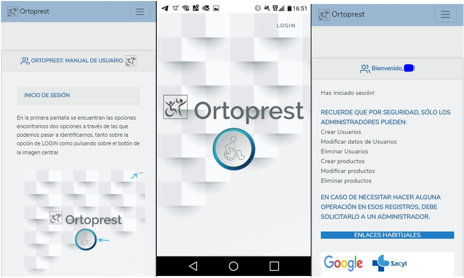

ORTOPREST

Web application for the management of orthoprosthetic benefits.
Final Project F.P. Senior Technician Development of Web Applications
Made with the PHP Laravel framework, it allows the secure authentication of administrators and users, as well as password recovery, with secure delivery to the indicated email via hash.

Maintains security privileges that prevent misuse of sensitive parts by users no admin role.
It allows the total data management of both users and products, listing everything in a very visual and comfortable for daily handling and with minimal training.
Of course, it is accessible from any type of device, to improve efficiency and not depend of a certain device.
As it has access restrictions, it does not have a public part, but you can see a small demo of it below.